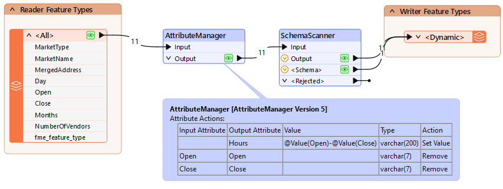
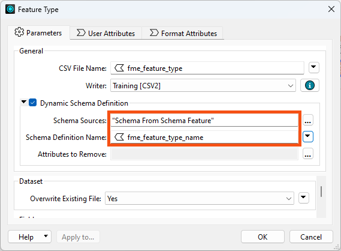
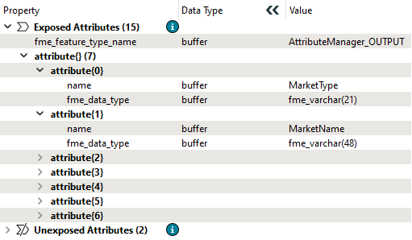
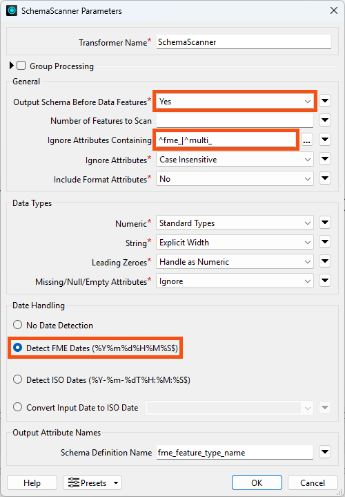
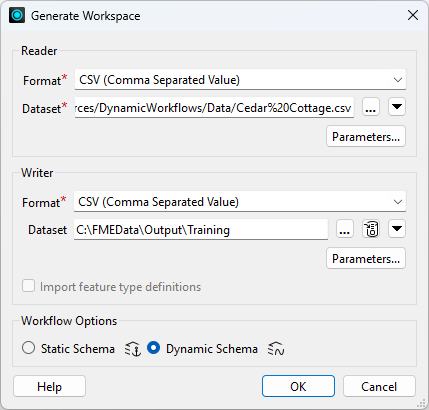
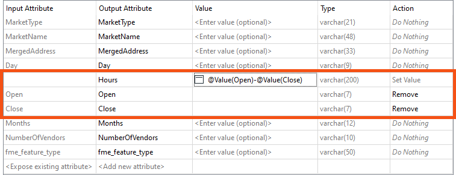
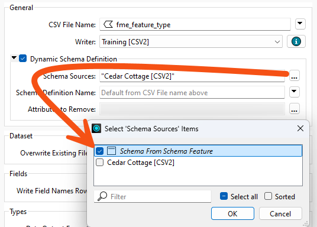
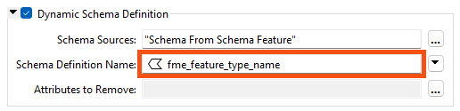
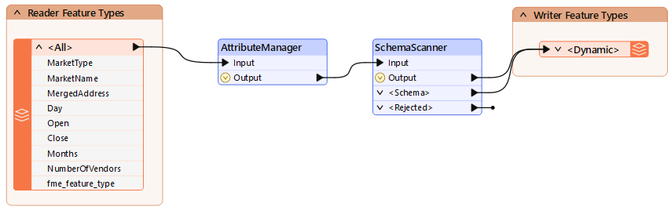
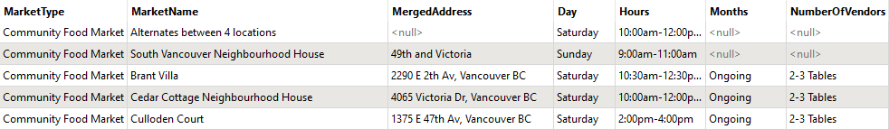

For more technical information on the SchemaScanner, check out the documentation.
After completing this lesson, you’ll be able to:
In this lesson, you will:
With the SchemaScanner, you can easily extract and manipulate the schema of your datasets, tackling dynamic workspace issues such as schema standardization and schema drift. How does it work? The SchemaScanner gives you a list attribute with attribute names and data types. Downstream in your workspace, you can use this list attribute to manipulate your schema and create flexible workflows. Instead of defining a fixed schema on your writers, you can use the schema from the list attribute to flexibly define the schema at runtime. Quality assurance and schema drift handling just got easier!
A schema, sometimes referred to as the "data model," can be described as the structure of a dataset or, more accurately, a formal definition of a dataset’s structure.
Each dataset has its unique schema, which includes feature types, permitted geometries, user-defined attributes, and other rules that define or restrict its content. However, for most users, the most critical aspects of a schema are attribute names and data types.
The SchemaScanner processes features and retrieves their schema by scanning for the attribute name and its data type. It will either scan all features or just a specified number of them. There’s also the option to exclude attributes using a Regular Expression to ensure a clean schema output.
The resulting output is a new schema feature output via the <Schema> output port. This new feature is also assigned the special attribute and value fme_schema_handling = ‘schema_only’, which allows a dynamic writer to recognize it as a schema feature. If you wish to continue using the original input features, these are passed via the Output port.
For more technical information on the SchemaScanner, check out the documentation.
Why you might want to use the SchemaScanner in your workspace:
Key things to remember:
As we’ve seen, dynamic workflows can obtain their schema from multiple locations.
One of those locations is in the workspace itself, and the SchemaScanner transformer is a key tool in making that happen.
As the name suggests, the SchemaScanner scans incoming features and produces a schema. That schema can then be used in a dynamic writer and stored in a specific FME feature.
The schema produced by this transformer may be different from the reader schema due to processes in the workspace, such as attribute renaming, removal, or addition.
In this example workspace, attributes are being added and removed from the reader schema:

The SchemaScanner generates a new schema for the output, assigns it a name, and passes it to a dynamic writer. Notice how the schema feature passes from the SchemaScanner's Schema output port to the same writer input port as incoming data. This is a somewhat unusual pattern in FME, so it's worth noting.
The dynamic writer is set up to recognize incoming schema features and will make use of them:

Notice how the Schema Source is set to “Schema From Schema Features” to inform the writer from where the schema is to be obtained. Also, notice the parameter that defines the name of the schema. This handles the situation where the same writer is fed multiple schema features.
Now, FME will write the data to the output CSV dataset using the schema modified by the AttributeManager.
A Schema Feature stores information about a schema that can be passed to a writer. The information is stored in a list attribute called attribute{}. It contains attribute names and data types, stored as attribute{}.name and attribute{}.fme_data_type:

Schema features are generated by the SchemaScanner transformer, the FeatureReader transformer, the Schema (Any Format) reader, and even the AttributePivoter transformer!
The schema generated by the FeatureReader is a copy of the dataset schema.
Going back to the SchemaScanner, let’s look at the parameters:

The important things to note here are:

Jennifer, a GIS Specialist, publishes a CSV of market opening hours. She wants the output to carry a single Hours column worked out from the Open and Close times, with those two source columns dropped. She does not want to redefine the writer schema by hand every time the source data changes.
In this exercise, you will:
Generating with Dynamic Schema gives you a schema-less translation to start from. Running it once before you change anything shows what the reader schema looks like on its own.

We will create a new attribute called Hours, a combination of the Open and Close attributes. But then we'll need to find a way to add that to the writer schema.
Hours and open the Text Editor for its value.@Value(Open) - @Value(Close).
The SchemaScanner reads the features as they are at that point in the workspace and builds a schema feature from them. Sending that schema feature to the writer alongside the data is what makes the output follow the changes you just made.
The writer still expects its schema from the reader. Pointing it at the schema feature instead is the step that hands control to the SchemaScanner.

fme_feature_type_name.

The output should now match what the workspace produces rather than what it read, which is the whole point of scanning the schema mid-workflow.


You have built a workspace whose output schema follows the data as the workspace changes it, rather than mirroring the source. If the incoming data changes, FME writes whatever schema it receives, and as long as Open and Close are present it will keep producing Hours in their place.